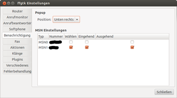

ffgtk
Archivierte Anleitung
Dieser Artikel wurde archiviert, da er - oder Teile daraus - nur noch unter einer älteren Ubuntu-Version nutzbar ist. Diese Anleitung wird vom Wiki-Team weder auf Richtigkeit überprüft noch anderweitig gepflegt. Zusätzlich wurde der Artikel für weitere Änderungen gesperrt.
Anmerkung: Das Programm heißt jetzt Roger Router
Zum Verständnis dieses Artikels sind folgende Seiten hilfreich:
Das Programm ffgtk (Fritz Fun GTK)  stellt eine grafische Oberfläche zur Verfügung, mit der man über FRITZ!Box-Geräte von AVM
stellt eine grafische Oberfläche zur Verfügung, mit der man über FRITZ!Box-Geräte von AVM  und T-Home Speedport-Router Faxe versenden und empfangen kann. Zusätzlich kann ffgtk den Anrufmonitor der Router abfragen und darstellen. Dabei werden eingehende und ausgehende Telefonnummern mittels Adressbuch oder aber Online-Diensten in Namen aufgelöst. Des Weiteren können Telefonnummern vom Rechner aus gewählt werden und die Internetverbindung neu aufgebaut werden.
und T-Home Speedport-Router Faxe versenden und empfangen kann. Zusätzlich kann ffgtk den Anrufmonitor der Router abfragen und darstellen. Dabei werden eingehende und ausgehende Telefonnummern mittels Adressbuch oder aber Online-Diensten in Namen aufgelöst. Des Weiteren können Telefonnummern vom Rechner aus gewählt werden und die Internetverbindung neu aufgebaut werden.
Hinweis:
Der offizielle Nachfolger des nicht mehr weiterentwickelten ffgtk ist Roger Router.
Merkmale¶
Unterstützung von Speedport- und FRITZ!Box-Routern
Fax-Versand und -Empfang
Akzeptiert nur auf der FAX-MSN eingehende FAX
Eine Option, um die Bildqualität von Faxen zu ändern
Eine Option, um die minimale Datenrate von Faxübertragungen festzusetzen
Softphone - Telefonieren mit dem Rechner
Anrufmonitor zur Anzeige aller eingegangenen, ausgegangenen und verpassten Anrufe
Wechsel des Programm-Symbol bei verpassten Anrufen
Signalisierung von Anrufen
per Popup
wahlweise zusätzlich durch eine Soundausgabe
Auswahl von Klängen (Sounddateien) für ein- und abgehende Anrufe
Ausführen von externen Programmen bei Anrufen (eingehend/ausgehend; zu Beginn/nach Beendigung)
Abrufen und Löschen der Anruferliste
Ausdrucken der Anruferliste
Automatisches Speichern der Anruferliste auf Festplatte für eine spätere Bearbeitung
Import von CSV-Dateien für Anruferliste und Adressbücher
Rückwärtssuche von Telefonnummern über eigene Adressbücher oder über Online-Dienste (dasoertliche, 11880, goyellow, gelbeseiten)
Native Unterstützung für ffgtk-, FritzFon-, Evolution- und Thunderbird-Adressbücher (mit Bildern) ohne den Umweg über eine CSV-Datei
Export des genutzten Adressbuches in eine CSV-Datei
Internetverbindung neu aufbauen
Informationen zu maximalen Datenraten der DSL-Verbindung beziehen
Anzeige und Speicherung der externen IP-Adresse im Speicher
Exklusive FRITZ!Box-Features¶
Wahl-Dialog mit Auflege-Funktion
Wählen von Telefonnummern vom Rechner aus und Weiterleitung des Gesprächs an ein beliebiges Endgerät
über Auswahl eines Eintrags im Anrufmonitor
über eine manuelle Eingabe der Telefonnummer
über eine partielle Eingabe von Namen im Adressbuch
Unterstützte Geräte¶
| Unterstützte Geräte | ||||
| AVM Fritz!Box | ||||
| FRITZ!Box Fon | FRITZ!Box Fon WLAN | FRITZ!Box Fon ATA | FRITZ!Box WLAN 3270 | FRITZ!Box Fon 5010 |
| FRITZ!Box Fon 5012 | FRITZ!Box Fon 5050 | FRITZ!Box Fon 5140 | FRITZ!Box Fon WLAN 7050 | FRITZ!Box Fon WLAN 7112 |
| FRITZ!Box Fon WLAN 7113 | FRITZ!Box Fon WLAN 7140 | FRITZ!Box Fon WLAN 7141 | FRITZ!Box 7150 | FRITZ!Box Fon WLAN 7170 |
| FRITZ!Box Fon WLAN 7240 | FRITZ!Box Fon WLAN 7270 | FRITZ!Box Fon WLAN 7320 | FRITZ!Box Fon WLAN 7330 | FRITZ!Box Fon WLAN 7340 |
| FRITZ!Box Fon WLAN 7390 | FRITZ!Box 7570 VDSL | FRITZ!Box 6360 Cable | ||
| T-Home Speedport | ||||
| Speedport W 501V | Speedport W 701V | Speedport W 721V | Speedport W 900V* | Speedport W 901V |
| Speedport W 920V | ||||
| Sonstige Hersteller | ||||
| Eumex 300 IP | ||||
* Funktioniert nicht mit Originalfirmware 34.04.57! Mit Speed-to-fritz lässt sich die Firmware einer Fritzbox 7170 aufspielen; erst dann ist das Fax auf dem Speedport freigeschaltet.
(Für weitere Geräte siehe auch die Liste auf der Projektseite oder einfach mal testen!)
Installation¶
ffgtk liegt bisher nicht in den Ubuntu-Quellen vor, kann aber aus einem "Personal Package Archive" bezogen werden[1].
Hinweis:
Mit den ab 23.03.2013 verfügbaren Paketen (ab ffgtk 0.8.5 bzw. 0.8.5.svn1833) wurden neue Benutzerrechte für die Fax-Funktion eingeführt. Dies erfordert, dass der Benutzer der diese Funktion nutzen will bzw. darf Mitglied in der Gruppe fax ist. Nach hinzufügen zur Gruppe muss der Benutzer eine Neuanmeldung durchführen, danach steht die Fax-Funktion für diesen Benutzer zur Verfügung.
PPA¶
Adresszeile zum Hinzufügen des PPAs:
ppa:dschaerf/ffgtk
Hinweis!
Zusätzliche Fremdquellen können das System gefährden.
Ein PPA unterstützt nicht zwangsläufig alle Ubuntu-Versionen. Weitere Informationen sind der  PPA-Beschreibung des Eigentümers/Teams dschaerf zu entnehmen.
PPA-Beschreibung des Eigentümers/Teams dschaerf zu entnehmen.
Damit Pakete aus dem PPA genutzt werden können, müssen die Paketquellen neu eingelesen werden.
Falls es Probleme mit der Authentifizierung/Signierung gibt, kann zusätzlich die Fremdquelle "freigeschaltet" werden.
Um die Fremdquelle zu authentifizieren, kann man den Signierungsschlüssel mit folgendem Befehl importieren:
sudo apt-key adv --recv-keys --keyserver keyserver.ubuntu.com F0DB7D0B
Danach müsste sich ffgtk installieren[2] lassen. Alle Abhängigkeiten lösen sich hier von selbst:
ffgtk (FritzFun GTK)
 mit apturl
mit apturl
Paketliste zum Kopieren:
sudo apt-get install ffgtk
sudo aptitude install ffgtk
Achtung!
In ffgtk 0.8.2 ist ein Fehler enthalten, der sich bei einer Erstinstallation auswirkt und über einen zu ersetzenden Konfigurationsordner behoben werden kann. Weitere Informationen dazu bei Problembehebung.
Hinweis:
Unity und das ffgtk-Icon:
Um das ffgtk-Icon im Unity-Panel angezeigt zu bekommen müssen alle bereits eingerichteten Benutzer das Skript /usr/share/ffgtk/install-unity.sh ausführen und anschliessend eine Neuanmeldung durchführen. Das Skript trägt ffgtk in die systray-whitelist von Unity ein. Wichtig hierbei ist, dass das Skript als normaler Benutzer ausgeführt wird, also auf keinen Fall als Root. Benutzern, die nach der Installation von ffgtk eingerichtet werden, steht das ffgtk-Icon bereits bei der ersten Anmeldung zur Verfügung. Sollte das nicht funktionieren, hilft ein Neustart des Systems in der Regel - oder falls dconf-editor installiert ist die folgende Alternative:
Alternativ zu dem eben erwähnten Skript kann der Eintrag auch manuell mittels dconf-editor vorgenommen werden, unter "desktop -> unity -> panel" den Eintrag systray-whitelist bearbeiten. Anschliessend ist ebenfalls eine Neuanmeldung erforderlich, damit die Einstellungen übernommen werden.
GNOME Classic und das ffgtk-Icon:
Wird das ffgtk-Icon unter GNOME Classic nicht im Panel angezeigt so fehlt in der Regel das Benachrichtigungsfeld im Panel.
Hinzufügen des Benachrichtungsfeldes: "
Alt + Rechtsklick  auf ein Panel -> Zum Panel hinzufügen... -> Benachrichtigungsfeld (aus der Liste auswählen) -> hinzufügen"
auf ein Panel -> Zum Panel hinzufügen... -> Benachrichtigungsfeld (aus der Liste auswählen) -> hinzufügen"
Als Alternative zum Paket ffgtk steht das Paket ffgtk-unity zur Verfügung, welches durch die appindicator-Integration Unity direkt unterstützt. Es ist hier also kein Eintrag in systray-whitelist erforderlich.
ffgtk-unity (FritzFun GTK)
mit apturl
Paketliste zum Kopieren:
sudo apt-get install ffgtk-unity
sudo aptitude install ffgtk-unity
Als Erweiterungen für ffgtk und ffgtk-unity stehen die folgenden Plugins zur Verfügung:
ffgtk-plugins-ebook (zur Integration des Adressbuches von Evolution)
mit apturl
Paketliste zum Kopieren:
sudo apt-get install ffgtk-plugins-ebook
sudo aptitude install ffgtk-plugins-ebook
ffgtk-plugins-gdata (zur Integration des Adressbuches von Google - ab Version 0.8.2 und ab Precise)
mit apturl
Paketliste zum Kopieren:
sudo apt-get install ffgtk-plugins-gdata
sudo aptitude install ffgtk-plugins-gdata
ffgtk-plugins-gnome-keyring (zur Speicherung von Router-Passwörtern im GNOME Keyring anstatt in Konfigurationsdateien des Programms)
mit apturl
Paketliste zum Kopieren:
sudo apt-get install ffgtk-plugins-gnome-keyring
sudo aptitude install ffgtk-plugins-gnome-keyring
ffgtk-plugins-gstreamer (für GStreamer-Unterstützung - entfällt ab Version 0.8.3)
mit apturl
Paketliste zum Kopieren:
sudo apt-get install ffgtk-plugins-gstreamer
sudo aptitude install ffgtk-plugins-gstreamer
ffgtk-plugins-kwallet4 (für die Nutzung von KWallet-Manager anstatt GNOME-Keyring )
mit apturl
Paketliste zum Kopieren:
sudo apt-get install ffgtk-plugins-kwallet4
sudo aptitude install ffgtk-plugins-kwallet4
ffgtk-plugins-pulseaudio (für Pulseaudio-Unterstützung)
mit apturl
Paketliste zum Kopieren:
sudo apt-get install ffgtk-plugins-pulseaudio
sudo aptitude install ffgtk-plugins-pulseaudio
Experten-Info:
In ppa:dschaerf/ffgtk stehen die aktuellen Releases für ffgtk und libcapi20 zur Verfügung. Als Erweiterung zu diesem PPA können durch hinzufügen eines weiteren PPA's - ppa:dschaerf/test - aktuelle Subversionen (SVN-Pakete, erkennbar am Zusatz z.B.: .svn1422 in der Versionsnummer) von ffgtk installiert werden. Die svn-Versionen sollten nicht auf Produktiv-Systemen eingesetzt werden. Eine Rückkehr von SVN nach Release erfolgt durch das Deaktivieren von ppa:dschaerf/test, sowie die Deinstallation der SVN-Version und erneutes instalieren der Release-Version. Das ppa:dschaerf/ffgtk muss in jedem Fall parallel zu ppa:dschaerf/test aktiviert sein, da die libcapi20 nur in diesem PPA vorhanden ist.
Manuelle Installation¶
Die Erstellung aus dem Quellcode (auch zur Nutzung der aktuellen SVN-Version) wird in Archiv/FritzBox/ffgtk/Kompilieren ausführlich beschrieben.
Optionale Pakete¶
Zur Nutzung anderer Erweiterungen werden ggf. folgende Programme benötigt:
MoreFunctionsForAddressbook- eine Erweiterung nur für Thunderbird, die der Speicherung von Kontakt-Fotos im Thunderbird-Adressbuch dient (Quelle)Tomboy Notiz Ersteller- ein Python-Skript, was als Aktion genutzt werden kann, um bei eingehenden Anrufen eine Notiz anzulegen (Quelle ), das Archiv nach dem Herunterladen entpacken[3]
), das Archiv nach dem Herunterladen entpacken[3]
Hinweis!
Fremdsoftware kann das System gefährden.
Drucker anlegen¶
Um ein Fax aus jedem Programm versenden zu können, muss ein Drucker Fax angelegt werden.
Achtung!
Seit Version 0.7.6 wird ein anderer Drucker benötigt, der u.a. schneller startet. Sofern man nicht das PPA verwendet, muss dieser von Hand erstellt werden. Dazu das Skript im Quellcode-Verzeichnis scripts/install-fax.sh mit Root-Rechten ausführen:
sudo ./install-fax.sh
Der neu erstellte Drucker "Fax" wird erstellt und ist sofort einsetzbar.
Nach der alten Methode angelegte Drucker funktionieren ab Version 0.7.6 nicht mehr!
Bis einschließlich Version 0.7.5 gilt folgende Anleitung:
Systemsteuerung im Desktop-Menu: "System -> Systemverwaltung -> Drucken"
Schaltfläche "Hinzufügen", (dort "Netzwerkdrucker")
Verbindung auswählen: "AppSocket/HP JetDirect"
Hostname: "localhost"
Port: "9901"
"Vor" (das zweite Suchfester nach Treibern kann abgebrochen werden)
Checkbox "Select Printer from Database" aktivieren
dort "Generic", "Vor" -> "Raw Queue" auswählen.
als Namen "Fax" vergeben
Schneller geht das mit einem Befehl im Terminal[4]:
sudo lpadmin -p Fax -E -v socket://localhost:9901
Router-Funktionen freischalten¶
Um Faxe und Anrufe signalisiert zu bekommen, muss man diese Funktionen noch im Router freischalten.
Fax-Unterstützung (CapiOverTCP): Mit dem Telefon die Nummer
#96*3*wählen (zum Deaktivieren#96*2*wählen).Signalisierung von Anrufen: Mit dem Telefon die Nummer
#96*5*wählen (zum Deaktivieren#96*4*wählen).
Nun kann ffgtk z.B. in GNOME über "Anwendungen -> Internet -> ffgtk Routerverwaltung" gestartet werden.
Um bei der FRITZ!Box Status-Informationen zum DSL angezeigt zu bekommen, muss man außerdem UPnP aktivieren. Die entsprechende Einstellung findet man in der Weboberfläche unter "Einstellungen -> System -> Netzwerkeinstellungen".
Hinweis:
Bei manchen Telefonen wird das # beim Wählen ausgelassen, mit der Folge, dass Telefoncodes nicht funktionieren! Um die Anwendung von Telefoncodes zu prüfen, bietet es sich für entsprechende Geräte an, das WLAN testweise per #96*1* ein- bzw. mit #96*0* auszuschalten. Falls das Telefon davon betroffen ist, kann es helfen zunächst nur die Raute # zu wählen und zu warten bis die Verbindung steht. Die restlichen Ziffern gibt man dann erst ein.
Konfiguration¶
Die Konfiguration erfolgt über die "Einstellungen", erreichbar über einen -Klick auf das Programm-Icon im Panel, worauf sich ein Dropdownmenü mit diversen Auswahlmöglichkeiten öffnet.
ffgtk bietet die Möglichkeit, Profile anzulegen. Jedes Profil hat seine eigenen Einstellungen und wird typischerweise für unterschiedliche Standorte verwendet. Es spielt dabei keine Rolle, ob an unterschiedlichen Standorten der gleiche Router (z.B. eine FRITZ!Box) steht oder nicht - zu jedem Profil wird die genutzte Hardware gespeichert.
Hinweis:
ffgtk speichert alle Konfigurationsdaten und Logs im eigenen Programmordner ~/.ffgtk/ oder im Ordner ~/.config/ffgtk ab.
Profile¶
Ein Profil anlegen¶
Zum Erstellen von Profilen existiert ein Assistent, der den Benutzer bei der Grundkonfiguration von ffgtk unterstützt. Er sucht im Netzwerk nach verfügbaren Routern und bezieht möglichst viele Einstellungen zu Telefonen, zum Telefonanschluss (Ländervorwahl, Ortsvorwahl und Rufnummern) oder zu VoIP-Nummern vollautomatisch.
In einigen Fällen schlägt die automatische Konfiguration jedoch fehl und man muss manuelle Angaben machen.
Hinweis:
Damit ffgtk in der Lage ist, die vom "Wählen"-Dialog aufgebauten Gespräche zu Endgeräten durchzustellen, müssen diese Endgeräte in der FRITZ!Box konfiguriert werden. Das gilt speziell für Handgeräte, die an einer ISDN-DECT-Basisstation konfiguriert wurden und über S0 mit der FRITZ!Box verbunden sind.
Ein Profil löschen¶
Zum Löschen von Profilen begibt man sich auf bekanntem Wege in die Einstellungen und klickt links unten auf die Minus-Schaltfläche!
Zu einem Profil wechseln¶
Der Wechsel zu einem anderen gespeicherten Profil ist denkbar einfach. Durch einen -Klick auf das Programmsymbol öffnet sich das Kontextmenü von ffgtk. Bewegt man die Maus nun über den Punkt "Profile" öffnet sich ein Seitenmenü mit angelegten Profilen. Nach der Auswahl eines Profils durch einen  -Klick wird der Profilwechsel vollzogen.
-Klick wird der Profilwechsel vollzogen.
Einstellungen¶
Zur vollständigen Konfiguration des aktuellen Profils wählt man "Einstellungen". Fritz Fun bietet Tooltipps bei fast jedem Eingabefeld oder jeder Schaltfläche. Fährt man mit der Maus über ein beliebiges Eingabefeld, werden sehr nützliche und ausführliche Informationen angezeigt, die auch unerfahrenen Benutzern bei der weiteren Konfiguration helfen. Das Fenster für Einstellungen ist zum besseren Verständnis in logische Bereiche aufgeteilt, die als einzelne Seite bearbeitet werden können:
Router-Seite¶
Hier gibt es in der Regel nichts zu tun, da der Assistent einem die Arbeit Einstellungen zu machen abgenommen hat. Aber wenn man einmal das Passwort auf seinem Router geändert haben sollte, kann man diese Änderung hier übernehmen.
Sollte die Vorbelegung durch den Assistenten fehlgeschlagen sein, muss man Host, Passwort und Standort-spezifische Daten wie die Landes- und die Ortsvorwahl (beides ohne führende Nullen!) manuell eintragen.
In jedem Fall notwendig ist die Auswahl eines Standard-Telefons für die Wählhilfe. Ob die Übernahme von im Router konfigurierten Telefonen funktioniert hat, erkennt man an dem Inhalt im Dropdownmenü. Wenn keine ISDN-Telefone erkannt wurden, findet man keine Gerätenamen wie z.B. 'Wohnzimmer' oder 'Büro', sondern nur ISDN(1) - ISDN(8). Die Auswahlmöglichkeit von Telefonen im Dropdownmenü hängt außerdem von den MSN-Einstellungen ab.
Dazu wählt man einfach das Endgerät aus, was man am häufigsten zu verwenden gedenkt.
Anrufmonitor-Seite¶
Hier lassen sich die Voreinstellungen für die angezeigten Spalten im Anrufmonitor machen.

Benachrichtigungen-Seite¶
Popup¶
Anrufe jeder Art können auf dem Desktop angezeigt werden. Auf Wunsch kann die Nummer des Anrufers bzw. des Ziels in Namen übersetzt werden. Je nach gewähltem Plug-in kann das Thunderbird-Adressbuch oder ein Telefonbuch aus dem Internet als Datenquelle dienen. Sofern eines der Adressbücher von Evolution oder Thunderbird genutzt wird, werden Kontaktfotos der Einträge in Popups angezeigt.
MSN-Einstellungen¶
Hier wird festgelegt, welche MSN im Wähldialog zur Auswahl stehen und welche Anrufe durch Aktionen, Popups und Sounds signalisiert werden sollen. In der Tabelle sollten alle im Router konfigurierten MSN durch den Assistenten übernommen worden sein. ffgtk überträgt die MSN auf eingerichtete Endgeräte des Routers. Entscheidend ist die ausgehende MSN des Telefons. Diese entscheidet, ob das Telefon im Wähldialog zur Auswahl steht oder nicht.
Fax-Seite¶
Es ist momentan nur möglich, zu jedem Profil ein einziges Faxgerät zu emulieren. ffgtk kann einen Header voraus schicken, der Informationen zum Absender enthält. Dazu trägt man im Feld "Kopfzeile" (maximal 254 Zeichen) z.B. seinen Namen ein und unter "Ident-Nummer" (maximal 20 Zeichen) seine Fax-Rufnummer, wie sie dargestellt werden soll, z.B. (+49) 12345 / 6789-0
Danach trägt man bei "Modem" die MSN im Feld "Fax-Nummer" ein, über die Faxe versendet bzw. empfangen werden sollen (ohne Landes- oder Ortsvorwahl, z.B. 67890).
Nun folgen einige Einstellungen, die es in sich haben und eine Menge Probleme verursachen können.
Festlegung einer Mindest-Bitrate für Faxübertragungen: Die Gefahr besteht darin, eine Bitrate festzulegen, die die Gegenstelle nicht unterstützt. Da Faxgeräte während der Synchronisation automatisch auf die größte gemeinsame Bitrate springen, werden 9600 empfohlen.
Die Wahl des Controllers: Der Typ der Amtsverbindung ("Amt(Typ)") hängt von dem Telefonanschluss und dem Router ab.
| Telefonanschluss | Amt-Typ (an Router mit S0) | Amt-Typ (an Router ohne S0) | Beispiel / Erklärung |
| ISDN | ISDN 1 | Verwendung des ersten Kanals der ISDN Leitung | |
| ISDN 2 | Verwendung des zweiten Kanals der ISDN Leitung | ||
| Amtsanschluss ISDN | - | Verwendung des S0 Bus (z.B. wenn der Router hinter einer TK-Anlage hängt und nur per S0 mit dem Anschluss verbunden ist) | |
| Analoges Festnetz | Amtsanschluss Analog | Verwendung des analogen Telefonanschlusses | |
| nur DSL/Internet | Voice over IP | Das Fax über das eingerichtete VoIP direkt über das Internet versenden | |
Hinweis:
Bei VoIP muss beachtet werden, dass (sofern eingestellt) nur Faxe angenommen werden, die über den selben Controller ankommen. Man sollte also nicht die Telefonnummer seines Festnetzanschlusses als Absender angeben, sondern die VoIP Nummer! Verwendet man zum Empfang hingegen das interne Faxgerät der FRITZ!Box, kann man dieses ohne Probleme für den Festnetzanschluss konfigurieren.
In Kombination mit Festnetzanschlüssen kommt es außerdem vor, dass der Anbieter das Faxen via VoIP blockiert.
Man kann außerdem einen Ordner ("Zielverzeichnis") einrichten, in dem Berichte zum Faxversand gesammelt werden sollen.
Hinweis:
Bei Fehlermeldung "Default fax plugin not set!" in ~/.ffgtk/ffgtk.log:
Ein Faxversand ist nur möglich, falls unter "Einstellungen -> Plug-In" das Plug-In für den Faxversand ausgewählt wurde. Siehe auch Plug-In-Seite
Der Fehler "Flags vom aktuellen Protokoll nicht unterstützt. Flags ignoriert" kann ggf. behoben werden, indem die Bitrate auf "2400" begrenzt wird.
Aktionen-Seite¶
Aktionen sind externe Programme oder Skripte, die ffgtk bei Ereignissen ausführen soll. Ein Ereignis steht hierbei für einen Anruf und wird wie folgt definiert: Man wählt zwischen eingehenden und ausgehenden Anrufen und spezifiziert den genauen Zeitpunkt der Ausführung (zu Beginn oder nach dem Anruf).
Möchte man den Namen und die Nummer zum Anruf im Skript nutzen gelten folgende Platzhalter:
%FIRSTNAME%-> enthält den Vornamen zum Anruf%LASTNAME%-> enthält den Nachnamen zum Anruf%NAME%-> enthält den vollständigen Namen zum Anruf%COMPANY%-> enthält den Firmennamen zum Anruf%NUMBER%-> enthält die Telefonnummer zum Anruf%LOCALNUMBER%-> enthält die lokale Telefonnummer zum Anruf
Hier nun einige Beispiele möglicher Aktionen für externe Programme:
| Programm | Funktion | Kommando (Execute) |
| Rhythmbox | Musikwiedergabe unterbrechen | /usr/bin/rhythmbox-client --pause --no-start |
| Musikwiedergabe fortsetzen | /usr/bin/rhythmbox-client --play --no-start | |
| Lautstärkeregelung | Ausgabelautstärke um 25% vermindern (ALSA) | amixer -c 0 set PCM 25%- |
| Ausgabelautstärke um 25% erhöhen (ALSA) | amixer -c 0 set PCM 25%+ | |
| Stumm schalten (PulseAudio) | pacmd "set-sink-mute 0 1" | |
| Laut schalten (PulseAudio) | pacmd "set-sink-mute 0 0" | |
| Pidgin | Abwesenheitsnachricht setzen | /usr/bin/purple-remote "setstatus?status=away&message=Telefoniert gerade mit %NAME%" |
| stelle Status wieder auf online | /usr/bin/purple-remote "setstatus?status=available&message=bin wieder da!" | |
| eSpeak | Soundausgabe des Anrufers ausgeben | padsp espeak -v de "Eingehender Anruf von %NAME%" |
| Tomboy | eine Anrufernotiz anlegen | /usr/bin/tomboy --new-note %NAME% (%NUMBER%) |
| Tomboy Notiz Ersteller | öffnet ein Dialogfenster zur Erstellung einer Anrufernotiz | tomboy_note.py "%LASTNAME%" "%NUMBER%" |
Klänge-Seite¶
Sollen Anrufe neben dem Popup zusätzlich mit einem Tonsignal gemeldet werden, (schließlich könnte ein Bildschirmschoner laufen), sind hier die Klang-Dateien zu wählen.
Plugins-Seite¶
Sofern die Rückwärtssuche in den Einstellungen der Anrufmonitor-Seite aktiviert ist, sollte man hier ein Internet-Telefonbuch auswählen. Meist ist "Das Örtliche" die beste Wahl.
Ein Adressbuch ist zur Suche der Namen für die Anruferliste auszuwählen. Möglich sind die Adressbücher:
Thunderbird (zur Anzeige von Kontaktfotos fehlt Thunderbird die Funktionalität, Abhilfe bringt die hier genannte Erweiterung)
Evolution (Steht nur zur Auswahl, wenn das entsprechende Zusatzpaket vor der Kompilierung von ffgtk installiert war!)
FritzFon-Adressbuch
Internes ffgtk-Adressbuch
Zuerst sucht ffgtk im gewählten Adressbuch. Wird dort nichts gefunden, so wird die Suche im gewählten Internet-Telefonbuch fortgesetzt. Nur in einigen externen Adressbüchern kann ffgtk neue Kontakte erstellen.
Unter Passwort-Verwaltung kann die Verwendung des GNOME-Schlüsselbunds zur Speicherung des Router-Kennworts aktiviert werden. Dies Einstellung ist ab Version 0.7.6 vorhanden (oder falls vor der Kompilierung das optionale Paket gnome-keyring-dev vorhanden war). Allerdings kann es mit der Verwendung des Schlüsselbunds zu Problemen beim Start des Programms kommen (siehe Anmerkung im Projekt-Thread).
Bei Audio kann das System ausgewählt werden.
Verschiedenes-Seite¶
Hier wird festgelegt, ob ffgtk die Anruferliste des Routers beim Programmstart neu laden soll. Die zuletzt bezogene Anruferliste von ffgtk wird in diesem Fall komplett überschrieben und gleichzeitig auf den aktuellen Stand gebracht. Dies bietet sich z.B. an, um festzustellen, ob es Anrufe in Abwesenheit gab, als ffgtk nicht lief.
Bei häufigem Wechsel zwischen Profilen sollte diese Option nicht gesetzt werden, wenn man jemanden zurückrufen will, dessen Nummer nicht im Adressbuch gespeichert ist und dieser an einem anderen Standort angerufen hatte. Würde man die Anruferliste von ffgtk nun mit der vom lokalen Router überschreiben, wäre die Telefonnummer also verloren!
Welche Option nun geeigneter ist, hängt also vom Benutzer ab!
Außerdem lässt sich hier festlegen, wie die Werkzeugleiste des Anrufmonitor aussehen soll.
Möchte man im Anrufmonitor zusätzlich Namen zur Nummer angezeigt bekommen, ist die Option Rückwärtssuche zu aktivieren. Dann werden zunächst alle Anrufe aus der Anruferliste des Routers mit Einträgen aus dem gewählten Adressbuch verglichen. Es lässt sich getrennt festlegen, ob für aus- und eingehende Anrufe automatisch die Rückwärtssuche aktiviert werden soll.
Fehlerbehandlungs-Seite¶
Sofern eingestellt speichert ffgtk seine Log in der Datei ~/.ffgtk/ffgtk.log. Es wird zwischen vier Debug-Typen unterschieden:
"Aus" - kein Mitschnitt
"Information" - nur grundlegende Informationen
"Warnung" - hier werden je nach Stufe alle oder nur kritische Fehler mitgeloggt
"Debug" - hier werden zusätzlich Statusmeldungen zu Addressimporten, zu CAPI-Meldungen oder zu geladenen Plug-Ins mitgeloggt.
Bei der Erstinstallation wird empfohlen, auf "Debug" zu stellen, um etwaige Fehler besser analysieren zu können. Man kann ruhig die höchste Einstellung (3) wählen, da ffgtk die Log-Datei bei jedem Start komplett überschreibt. Es muss also nicht befürchtet werden, dass mit der Zeit Unmengen an Speicherplatz genutzt wird.
Wenn man keine Aktualisierung oder Konfigurationsänderungen am Programm vornimmt, kann man den Log-Modus nach erfolgreicher Funktionsprüfung auf eine niedrigere Stufe stellen.
Benutzung¶
Ein -Klick auf das ffgtk-Symbol öffnet bzw. schließt den Anrufmonitor.
Ein -Klick auf das Symbol öffnet das Kontextmenü. Die wichtigsten Ziele sind mit einem einzigen Klick erreichbar.
So lässt sich zum Beispiel das Adressbuch öffnen,
die externe IP kopieren,
die Internetverbindung neu erstellen (z.B. um die externe IP zu ändern)
eine SMS versenden (momentan nur in Verbindung mit einem Festnetzanschluss möglich, nicht über VoIP), dazu ist die Installation des Programmes
yapserforderlich, siehe http://www.tabos.org/ffgtk/oder ein Anruf starten!
DSL-Informationen¶
Wenn man die Maus über das ffgtk-Symbol bewegt, zeigt ffgtk Informationen zur aktuellen DSL-Verbindung als Tooltipp an. Dazu gehören die maximal verfügbaren Datenraten für Up- und Download, die z.B. über "UPnP" von der FRITZ!Box gesendet werden, als auch die derzeit vom Provider zugewiesene externe IP-Adresse.
UPnP muss also auf der Fritz!Box aktiviert werden.
Anrufmonitor¶
Dieser informiert über alle auf dem Router gespeicherten Anrufe. Ob es Anrufe in Abwesenheit gab, sieht man daran, dass sich das ffgtk-Symbol in ein orangefarbenes Kreuz verwandelt. Hier stehen folgende Funktionen zur Verfügung:
"Aktualisieren" lädt die Daten vom Router neu.
"Anrufliste für alle Profile" zeigt entsprechende alle Anrufe an
"Anrufliste vom nächsten Profil" zeigt die Anrufe des folgenden Profils an, wenn mehrere Profile existieren
"Löschen" setzt die Anruferliste auf dem Router zurück; damit werden alle gespeicherten Anruf-Daten endgültig gelöscht.
"Drucken" öffnet die Druckerauswahl für das Drucken (oder Faxen).
Links wird eine Liste von Anzeigeoptionen angeboten, um die anzuzeigende Anruferliste einzuschränken. So ist es möglich, eigene Abfragen anzulegen. Dazu stehen "+" und "-" Schaltflächen zur Verfügung. Zum Beispiel könnte man eine Ansicht für die Anzeige von verpassten Anrufen einer bestimmten MSN anlegen.
Nach der Auswahl eines Anrufs in der Liste sind weitere Funktionen verfügbar:
"Anrufen" startet den Wähldialog. Die markierte Telefonnummer wird übernommen und man kann vor Beginn des Wählvorgangs die üblichen Optionen anpassen.
"Hinzufügen" öffnet ein Popup, um einen neuen Kontakt im Adressbuch anzulegen.
"Rückwärtssuche" startet die Rückwärtssuche im eingestellten Internet-Telefonbuch.
Adressbuch¶
"Aktualisieren"-Schaltfläche: hiermit werden externe Adressbücher erneut eingelesen. ffgtk bezieht dabei nur relevante Felder und importiert keine Adressen.
"Exportieren"-Schaltfläche: hiermit wird das aktuelle Adressbuch als CSV-Datei exportiert.
Wer das FritzFon-Telefonbuch nutzt, bekommt somit erstmals die Möglichkeit, alle Einträge der FRITZ!Box zu sichern.
Es wird davon abgeraten, Exporte bzw. Datensicherungen von Evolution- / Thunderbird-Adressbüchern mit ffgtk durchzuführen, da nur der Datenumfang gesichert wird, der von ffgtk genutzt wird, also ohne Adressen, E-Mail, etc!
"Hinzufügen- / Bearbeiten"-Schaltfläche: Durch einen
-Klick auf diese Schaltflächen können Einträge des Adressbuches (welches als Plug-In eingestellt ist) gepflegt werden. Bei manchen externen Adressbüchern ist diese Funktion nicht verfügbar.
Wählen¶
Die Wählfunktion bietet eine automatische Vervollständigungsfunktion. Will man also eine Person aus dem Adressbuch anrufen, muss man nur wenige Buchstaben des Vornamens im Feld "Name" eintippen und es wird in Echtzeit eine Liste mit Übereinstimmungen generiert. Sieht man den Namen in der Liste, reicht ein Klick darauf und ffgtk bietet die Telefonnummern dieses Eintrags zur Auswahl unter "Telefonnummer" an. Man kann außerdem noch angeben, an welches Endgerät das Gespräch vermittelt werden soll. Dazu wählt man aus dem Dropdownmenü einfach das entsprechende Telefon aus. Die Bezeichnung des Endgerätes wird von der Konfiguration aus dem Router übernommen. Es stehen nur Telefone zur Auswahl, die in den MSN-Einstellungen in der Spalte "Wählen" mittels Checkbox gesetzt sind.
Fax versenden¶
Achtung: ab Version 0.85 gibt es ein geändertes Rechtesystem: Dem Benutzer muss eine Gruppe fax zugewiesen werden:
sudo addgroup <username> fax
Wenn man wie oben beschrieben einen Drucker angelegt hat, kann aus jeder Anwendung heraus ein Fax versenden, die Unterstützung für CUPS-Drucker mitbringt. Im jeweiligen Programm "Drucken" wählen und den Drucker "Fax" auswählen. Es erscheint ein neues Fenster, in dem man die Fax-Nummer eintragen muss. Auch hier ist die Autovervollständigung verfügbar, die dem Benutzer den Zugriff auf das Adressbuch ermöglicht. Alternativ kann man einen Eintrag direkt im Adressbuch suchen.
Anschließend auf "Senden" klicken.
Optional kann ffgtk einen Sendebericht erstellen. Dieser entspricht einem PDF der Faxnachricht und den üblichen Sendeinformationen:
Zielrufnummer
Zeitstempel des Versendens
Erfolgs-Status
Bitte beachten, dass ein Sendebericht hierzulande nicht als rechtsgültiger Beweis anerkannt wird!
Für mehrseitige Faxe, die ohne Umwege z.B. direkt aus Simple Scan heraus erstellt werden können, wird momentan nur ein einseitiger Sendebericht erstellt, der im Header zwar die tatsächliche Anzahl der gesendeten Seiten aufführt, aber nur die erste Seite des Faxes speichert.
Faxe empfangen¶
Eingehende Faxe werden in der in den "Einstellungen -> FAX -> Zielverzeichnis" festgelegten Verzeichnis abgelegt; die Dateien werden nach dem Muster ffgtk-MSN-Absendernummer-Datum-Uhrzeit.tiff gespeichert.
Ggf. wirken die Faxe aufgrund der von Faxgeräten verwendeten Auflösungen in Standard-Bildbetrachtern "gestaucht", beim Aufruf in einem Dokumentbetrachter wie Evince oder Okular (dort allerdings nur mit dem Paket okular-extra-backends) werden sie aber gleich richtig dargestellt. Ansonsten kann man sie für den Ausdruck auch neu skalieren, z.B über GIMP (dort im Reiter "Bild -> Bild skalieren" bei Bildgröße die Werte für "Breite" und "Höhe" entkoppeln und vertauschen).
Hinweis:
Wenn der Fax-Empfang unter DSL/VoIP nicht funktioniert, überprüfen, ob als MSN eine reine Telefonnummer ohne Vorwahl verwendet wird. Einige Provider vergeben Internetnummern gleich mit Vorwahl. Eine solche Nummer kann nicht verwendet werden, da ffgtk die eingehende Nummer um die Vorwahl kürzt, und dann mit der angegebenen MSN-Nummer vergleicht. Abhilfe schafft es, im Fritz!Box-Webinterface unter "Einstellungen -> Telefonie -> Internettelefonie" den Eintrag selbst entsprechend anzupassen. Das gilt natürlich auch, wenn als "Internetrufnummer" ein Benutzername o.ä. eingetragen ist.
Problembehebung¶
Programmabsturz debuggen¶
Sollte das Programm abstürzen, empfiehlt es sich, einen Blick in das Logfile unter ~/.ffgtk/ffgtk.log zu werfen. Je höher die Einstellung zu Debugausgaben desto besser. Die Entwickler bitten außerdem häufig um eine gdb-Ausgabe, um den Fehler einzukreisen; dazu führt man Folgendes aus:
gdb ffgtk run
Nach einem "segfault" (also dem Absturz) führt man Folgendes aus und pastet die Ausgabe dann im Hilfsthread zu ffgtk als Code:
bt full
Mehr als ein SAPI Gerät¶
Besitzt man mehr als ein CAPI-Gerät und es wird kein Fax versendet, kann es helfen, die Datei ~/.capi20rc mit dem einzigen Eintrag
REMOTE fritzbox fritz.box 5031
anzulegen.
Firmwareupdate - CAPI erneuern¶
Bei einem Firmwareupdate des Routers sollte vorsichtshalber die CAPI erneut per Telefoncode aktiviert werden. Es kommt häufiger vor, dass diese Einstellung zurückgesetzt wird.
Fehlermeldung im Printdialog¶
Fehlermeldung im Printdialog: "printer fritzfax may not be connected"/ "Drucker nicht angeschlossen?" oder "Capifax nicht eingerichtet!". Es ist möglich, dass die Kommunikation bzgl. des Drucks zwischen ffgtk und der Fritz!Box die Ursache für diesen Fehler ist. Der Eintrag der Fritz!Box in /etc/hosts kann Abhilfe schaffen und ist empfohlen.
1 | 192.168.178.1 fritz.box
|
Im Beispiel ist unterstellt, dass die Fritz!Box die IP 192.168.178.1 eingestellt hat.
ffgtk-/ffgtk-unity-0.8.2 - Erstinstallation¶
Leider hat sich in die Version 0.8.2 ein Fehler eingeschlichen, der zu einem Speicherzugriffsfehler führt nach einer Erstinstallation, also ohne vorhanden Konfiguration/vorhandenes Profil. Als vorübergehende Lösung wurde eine Default-Konfiguration im Archiv hinterlegt. Das darin enthaltene ffgtk-Verzeichnis ist nach ~/.config/ zu kopieren, vorher bitte das ffgtk-Verzeichnis in ~/.config/ löschen. Danach ffgtk starten und über "Profile/Verwalten" ein neues Profil erstellen. Das Profil "default" kann anschließend gelöscht werden. Der Download findet sich hier: ffgtk-0.8.2-config-default.tar.bz2 auf der "Paketbetreuer-Website"
 - Weitere Artikel zum Thema FritzBox
- Weitere Artikel zum Thema FritzBox- Erstellt mit Inyoka
-
 2004 – 2017 ubuntuusers.de • Einige Rechte vorbehalten
2004 – 2017 ubuntuusers.de • Einige Rechte vorbehalten
Lizenz • Kontakt • Datenschutz • Impressum • Serverstatus -
Serverhousing gespendet von